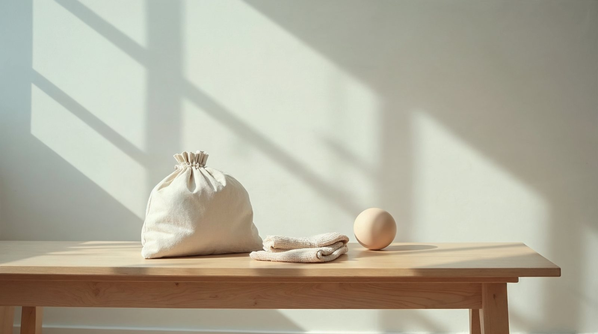
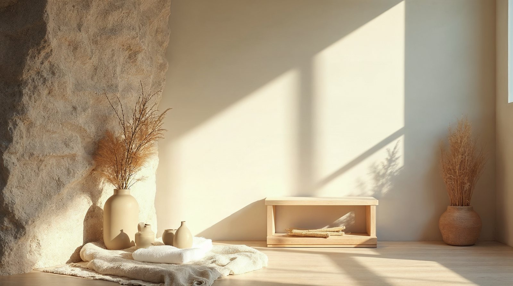
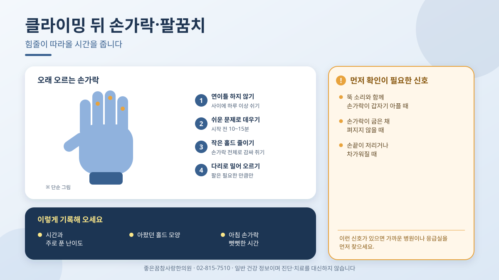

이종호 한의사 감수좋은꿈참사랑한의원 대표원장 (한의사 면허번호 19769)발행 2026-11-26 · 수정 2026-11-26
이 글의 차례
퇴근 뒤 친구 손에 이끌려 처음 가 본 실내 클라이밍장, 알록달록한 홀드를 하나씩 잡고 벽을 오르는 재미에 금세 빠져듭니다. 일주일에 서너 번씩 다니며 어려운 문제를 하나씩 풀어 가는데, 어느 날부터 약지 가운데 마디 안쪽이 시큰하고 팔꿈치 안쪽이 묵직합니다.
클라이밍은 요즘 젊은 분들 사이에서 무척 사랑받는 운동입니다. 혼자서도, 친구와 함께도 즐길 수 있고 문제를 풀어 가는 성취감이 큽니다. 그런데 진료실에서는 클라이밍을 시작하고 몇 달 안에 손가락과 팔꿈치 불편을 안고 오시는 분을 꽤 자주 만납니다.
클라이밍에서 몸무게를 버티는 것은 결국 손가락입니다. 작은 홀드에 손가락 끝을 걸고 몸 전체를 끌어올리는 동작은 일상에서는 거의 쓰지 않는 방식으로 손가락 힘줄과 그 힘줄을 붙잡아 주는 띠를 씁니다. 근육은 몇 주 만에 힘이 붙지만, 힘줄은 그 속도를 따라가지 못합니다.
저는 이런 분들께 "어떤 홀드를 잡을 때, 몇 번째 문제에서 아팠는지"와 "일주일에 몇 번, 몇 시간 하시는지"를 먼저 여쭙니다. 손가락 한 마디의 불편 속에도 그동안 쌓인 운동량과 쉬는 날의 이야기가 들어 있기 때문입니다.
클라이밍 뒤 손가락과 팔꿈치 통증은 어떤 모습인가요?
손가락에서 가장 흔한 것은 가운데 마디 안쪽, 손바닥 쪽이 시큰한 경우입니다. 손가락을 굽히는 힘줄을 뼈에 붙잡아 주는 띠가 있는데, 작은 홀드에 손가락 끝을 세워 거는 동작을 반복하면 이 띠에 큰 힘이 걸려 붓고 아프기 쉽습니다. 주로 약지와 중지에서 많이 생깁니다.
손가락 관절 자체가 뻣뻣하고 아침에 붓는 경우도 있습니다. 홀드를 세게 쥐는 동작이 반복되면서 관절 주변이 지친 것으로, 손가락을 완전히 굽히거나 펴기 어렵고 마디가 조금 굵어진 느낌이 들기도 합니다.
팔꿈치는 안쪽과 바깥쪽이 모두 아플 수 있습니다. 손가락과 손목을 굽히는 근육은 팔꿈치 안쪽에, 펴는 근육은 바깥쪽에 붙어 있어서, 홀드를 오래 쥐고 버티면 안쪽이, 손목을 젖힌 채 버티면 바깥쪽이 시큰해집니다. 팔을 굽혀 몸을 끌어올리는 동작이 많으면 팔꿈치 앞쪽이 뻐근하기도 합니다.
왜 클라이밍을 하면 손가락이 먼저 지칠까요
일상에서 손가락은 물건을 감싸 쥐는 데 익숙합니다. 그런데 클라이밍에서는 손가락 끝마디만 홀드에 걸고, 가운데 마디를 날카롭게 꺾은 채 몸무게를 버티는 자세가 많습니다. 이 자세는 손가락 힘줄을 붙잡는 띠에 일상과는 비교할 수 없을 만큼 큰 힘을 싣습니다.
근육과 힘줄이 자라는 속도가 다르다는 것도 큰 이유입니다. 클라이밍을 시작하면 팔과 등 근육은 몇 주 만에 힘이 붙어 더 어려운 문제에 도전할 수 있게 됩니다. 하지만 손가락 힘줄과 띠는 몇 달에 걸쳐 천천히 단단해집니다. 그 사이 틈이 생기는 시기에 손가락이 탈이 나기 쉽습니다.
쉬는 날이 부족한 것도 흔한 이유입니다. 재미가 붙으면 매일 가고 싶어지지만, 손가락 힘줄은 운동한 다음 날보다 그다음 날까지 회복이 필요한 경우가 많습니다. 연이틀, 연사흘 이어서 하면 회복되기 전에 다시 힘을 받게 됩니다.
몸이 덜 풀린 상태로 바로 어려운 문제에 매달리는 것, 지친 상태로 마지막 한 번을 더 시도하는 것도 손가락이 다치기 쉬운 순간입니다. 진료실에서 들어 보면 '오늘 마지막으로 한 번만' 하다가 손가락에서 뚝 하는 느낌이 났다는 분이 적지 않습니다.
손가락 통증은 어떻게 나눠 보나요
손가락 가운데 마디 바로 아래나 위, 손바닥 쪽을 눌렀을 때 콕 아프고 홀드에 손가락 끝을 세워 걸 때 더 아프다면 힘줄을 붙잡는 띠 쪽을 먼저 생각합니다. 뚝 하는 소리와 함께 갑자기 아팠다면 띠가 크게 다쳤을 수 있어 검사가 필요합니다.
손가락을 굽혔다 펼 때 딸깍 걸리는 느낌이 있다면 힘줄이 지나는 길이 좁아진 방아쇠수지를 생각해 봅니다. 손가락 관절이 붓고 아침에 뻣뻣하다면 관절 주변이 지친 것에 가깝고, 여러 손가락 관절이 함께 붓고 쉬어도 가라앉지 않는다면 다른 원인이 없는지 함께 살핍니다.
손가락 끝이 저리거나 감각이 둔하다면 힘줄보다 신경 쪽 자극을 생각합니다. 팔꿈치 안쪽을 오래 굽히고 있으면 새끼손가락과 약지가 저린 경우도 있어, 저림이 어느 손가락에 오는지가 나눠 보는 단서가 됩니다.
팔꿈치 통증은 손가락과 어떻게 이어지나요
손가락을 쥐는 근육은 팔뚝을 따라 팔꿈치 안쪽까지 이어집니다. 그래서 홀드를 세게 오래 쥐는 날이 이어지면 손가락보다 먼저 팔꿈치 안쪽이 시큰해지는 분도 있습니다. 흔히 골프엘보라고 부르는 자리와 같습니다.
팔꿈치 바깥쪽이 아프다면 손목을 젖힌 채 버티는 동작이나 경사벽에서 손등 쪽으로 버티는 동작이 많았을 수 있습니다. 테니스엘보라고 부르는 자리로, 컵을 들거나 문고리를 돌릴 때도 불편해집니다.
팔꿈치 통증은 손가락 힘줄을 아끼느라 팔 전체로 홀드를 쥐어짜듯 잡을 때도 생깁니다. 그래서 손가락과 팔꿈치는 따로 보지 않고 함께 살핍니다. 한쪽의 불편이 다른 쪽의 쓰임새를 바꿔 놓는 경우가 많기 때문입니다.
스스로 먼저 살펴볼 수 있는 것
아픈 손가락을 반대쪽과 나란히 놓고 마디의 굵기와 붓기를 비교해 보세요. 손가락을 끝까지 굽혀 주먹을 쥐고, 끝까지 펴 보며 어느 쪽에서 막히는지 확인합니다. 손가락 마디를 따라 눌러 보면 콕 아픈 자리가 어디인지 감이 잡힙니다.
팔꿈치는 손바닥을 아래로 하고 손목을 들어 올리며 버텨 보고, 손바닥을 위로 하고 손목을 굽히며 버텨 보세요. 앞의 동작에서 바깥쪽이, 뒤의 동작에서 안쪽이 아프다면 그쪽 힘줄이 지쳐 있을 수 있습니다.
아침에 일어났을 때 손가락이 뻣뻣한지, 몇 분 지나면 풀리는지도 기록해 보세요. 운동한 다음 날과 쉰 다음 날을 비교하면, 지금 손가락이 감당할 수 있는 양이 어느 정도인지 짐작할 수 있습니다.
먼저 이렇게 여쭙니다
- 클라이밍을 시작하신 지 얼마나 되셨나요? 일주일에 몇 번, 몇 시간 하시나요?
- 어떤 홀드(작은 홀드, 핀치, 슬로퍼)를 잡을 때 가장 아프신가요?
- 뚝 하는 소리나 느낌과 함께 갑자기 아팠나요, 서서히 아파졌나요?
- 연이틀 이상 이어서 하시는 날이 있나요? 쉬는 날은 며칠인가요?
- 행보드나 손가락 훈련 도구를 쓰고 계신가요?
- 손가락 저림, 팔꿈치 안쪽을 굽힐 때 저림이 있나요?
클라이밍장에서 주로 푸는 문제의 난이도와 최근 올린 난이도도 알려 주세요. 난이도를 올린 시점과 손가락이 아파진 시점이 겹치는 경우가 많아, 쉬어 갈 방향을 정하는 데 도움이 됩니다.
일상에서 먼저 해 볼 수 있는 것
손가락이 시큰하기 시작했다면 가장 먼저 작은 홀드와 손가락 끝을 세워 거는 동작을 줄여 주세요. 큰 홀드 위주의 쉬운 문제로 바꾸고, 손가락 전체로 감싸 쥐는 자세를 쓰면 힘줄을 붙잡는 띠에 걸리는 힘이 줄어듭니다.
- 연이틀 이어서 하지 않고, 하는 날 사이에 하루 이상 쉬기
- 시작 전 쉬운 문제로 10~15분 몸과 손가락 데우기
- 아픈 날에는 작은 홀드, 행보드, 손가락 끝 걸기 피하기
- 지친 상태에서 마지막 시도는 다음 날로 미루기
- 운동 뒤 손가락과 팔뚝 근육을 가볍게 늘려 주기
- 팔뚝이 터질 듯 뻐근한 날은 거기서 마무리하기
손가락에 테이핑을 하면 안정감이 생기지만, 테이핑만 믿고 양을 늘리면 오히려 더 다칠 수 있습니다. 테이핑은 회복 중 조심스럽게 돌아갈 때 보조로 쓰시고, 양 조절이 먼저입니다.
팔꿈치가 불편하다면 홀드를 쥐어짜듯 잡는 습관이 없는지 살펴보세요. 필요한 만큼만 쥐고 다리로 몸을 밀어 올리는 연습을 하면 팔과 손가락의 부담이 함께 줄어듭니다. 클라이밍은 팔 운동이라기보다 다리와 몸 전체로 오르는 운동입니다.
손가락을 펴는 근육을 함께 기르는 것도 균형에 도움이 됩니다. 손가락에 고무줄을 걸고 바깥으로 벌리는 동작을 가볍게 해 보세요. 쥐는 근육만 강해지고 펴는 근육은 약해지면 팔꿈치 바깥쪽이 지치기 쉽습니다.
다시 벽에 오를 때는 어떻게 하나요
통증이 줄었다면 쉬운 문제와 큰 홀드부터 다시 시작합니다. 손가락 전체로 감싸 쥐는 문제를 아프지 않게 소화할 수 있을 때, 조금씩 작은 홀드를 섞어 가며 다음 날 손가락 반응을 살핍니다.
난이도와 시간은 일주일에 한 걸음씩만 올립니다. 손가락이 새로운 부담에 익숙해지는 데는 몇 주가 걸리니, 몸이 가볍게 느껴지는 날에도 욕심을 조금 덜어 두는 것이 좋습니다. 행보드 같은 손가락 훈련은 가장 마지막에 돌아옵니다.

손가락이 쉬는 동안 할 수 있는 운동
손가락을 쉬게 한다고 해서 몸 전체를 멈출 필요는 없습니다. 다리 근력 운동, 몸통 운동, 가벼운 달리기나 자전거처럼 손가락을 쓰지 않는 운동으로 체력을 이어 가면, 다시 벽에 돌아갔을 때 손가락 부담이 오히려 줄어듭니다. 클라이밍은 다리로 미는 힘이 클수록 손가락이 덜 애쓰기 때문입니다.
어깨와 날개뼈 주변 근육을 기르는 운동도 도움이 됩니다. 매달릴 때 어깨가 몸을 단단히 받쳐 주면 팔꿈치와 손가락으로 쏠리는 힘이 분산됩니다. 쉬는 기간을 몸의 다른 부분을 채우는 시간으로 생각해 보세요.
한의원에서 함께 살필 수 있는 경우
- 손가락 가운데 마디 안쪽이 시큰한 일이 몇 주째 이어지는 경우
- 클라이밍 다음 날 손가락이 붓고 아침마다 뻣뻣한 경우
- 팔꿈치 안쪽이나 바깥쪽이 시큰해 컵을 들 때도 불편한 경우
- 쉬는 날을 늘려도 손가락 불편이 좀처럼 줄지 않는 경우
- 손가락과 함께 어깨, 목까지 뻐근해진 경우
좋은꿈참사랑한의원에 오시면 먼저 아래 '먼저 확인이 필요한' 신호가 없는지부터 봅니다. 그다음 맥을 짚고, 손가락 마디와 팔꿈치를 직접 만져 보며 붓기와 움직임, 힘을 확인합니다. 필요하다고 판단되면 초음파로 손가락과 팔꿈치 힘줄을 살펴봅니다.
진찰한 내용을 바탕으로 침, 약침, 물리치료 가운데 지금 상태에 맞는 것을 정합니다. 팔꿈치 힘줄 통증이 오래 이어졌다면 체외충격파를 상의하기도 합니다. 한약을 상의할 때는 드시는 약을 확인한 뒤 신중히 정합니다.
언제 다시 난이도를 올릴지도 진료 때마다 함께 정합니다. 정형외과나 수부외과 진료를 받고 계신다면 그 진료와 나란히 가는 것으로 생각해 주시면 됩니다.
이렇게 기록해 오시면 상담이 쉬워집니다
- 클라이밍한 날짜, 시간, 주로 푼 문제의 난이도
- 운동 중, 직후, 다음 날 아침 손가락과 팔꿈치 상태
- 아팠던 홀드 모양과 동작
- 쉬는 날과 테이핑 여부
- 아침 손가락 뻣뻣함이 풀리기까지 걸린 시간
아픈 손가락을 같은 각도로 찍은 사진을 며칠 간격으로 남겨 두셔도 좋습니다. 붓기의 흐름이 말보다 또렷하게 보입니다. 빠진 날이 있어도 괜찮으니 편하게 적어 주세요.

오래 오르는 손가락을 위해
클라이밍은 문제 하나를 풀 때마다 성취감이 큰 운동이라 자꾸 더 어려운 벽으로 손이 갑니다. 하지만 손가락 힘줄은 몇 달, 몇 년에 걸쳐 천천히 단단해집니다. 그 속도에 맞춰 오르는 사람이 결국 더 오래, 더 높이 오릅니다.
함께 다니는 친구들과 비교하지 않는 것도 중요합니다. 같은 날 시작했더라도 손가락 힘줄이 단단해지는 속도는 사람마다 다릅니다. 친구가 어려운 문제를 풀었다고 해서 내 손가락도 같은 준비가 된 것은 아닙니다. 내 손가락의 다음 날 아침 상태가 가장 믿을 만한 기준입니다.
이번 주에는 연이틀 하지 않기, 시작 전 쉬운 문제로 15분 데우기, 이 두 가지만 지켜 보세요. 다음에 오시면 손가락 마디가 어떻게 달라졌는지 함께 살펴보겠습니다.
이런 증상은 먼저 확인이 필요합니다
- 뚝 하는 소리와 함께 손가락이 갑자기 아프고 붓거나 손가락이 굽은 채 펴지지 않는 경우
- 떨어지거나 짚은 뒤 손목·팔꿈치 모양이 달라 보이고 손끝이 저리거나 차가워지는 경우
이런 신호가 있으면 한의원보다 가까운 병원이나 응급실을 먼저 찾으세요.
함께 읽으면 좋은 글
- 손가락을 굽혔다 펼 때 딸깍 걸리는 방아쇠수지는 어떻게 살피나요?
- 팔꿈치 바깥쪽·안쪽이 시큰한 테니스엘보와 골프엘보는 어떻게 살피나요?
- 컵을 들거나 손을 쥘 때 팔꿈치 바깥쪽·안쪽이 시큰하면 체외충격파는 어떻게 살피나요?
- 팔꿈치를 오래 굽히고 있으면 새끼손가락과 약지가 저린 팔꿈치 척골신경 저림(주관증후군)은 어떻게 살피나요?
- 공에 맞거나 부딪혀 손가락을 삐었을 때, 손가락 염좌는 어떻게 살피나요?

여쭙는 것
- 클라이밍을 시작하신 지 얼마나 되셨나요? 일주일에 몇 번, 몇 시간 하시나요?
- 어떤 홀드(작은 홀드, 핀치, 슬로퍼)를 잡을 때 가장 아프신가요?
- 뚝 하는 소리나 느낌과 함께 갑자기 아팠나요, 서서히 아파졌나요?
생활에서 해 볼 것
- 연이틀 이어서 하지 않고, 하는 날 사이에 하루 이상 쉬기
- 시작 전 쉬운 문제로 10~15분 몸과 손가락 데우기
- 아픈 날에는 작은 홀드, 행보드, 손가락 끝 걸기 피하기
한의원에서 함께 살필 것
- 손가락 가운데 마디 안쪽이 시큰한 일이 몇 주째 이어지는 경우
- 클라이밍 다음 날 손가락이 붓고 아침마다 뻣뻣한 경우
- 팔꿈치 안쪽이나 바깥쪽이 시큰해 컵을 들 때도 불편한 경우
먼저 확인이 필요한 신호
- 뚝 하는 소리와 함께 손가락이 갑자기 아프고 붓거나 손가락이 굽은 채 펴지지 않는 경우
- 떨어지거나 짚은 뒤 손목·팔꿈치 모양이 달라 보이고 손끝이 저리거나 차가워지는 경우
한눈에 보는 표
| 구분 | 핵심 |
|---|---|
| 여쭙는 것 | 클라이밍을 시작하신 지 얼마나 되셨나요? 일주일에 몇 번, 몇 시간 하시나요? 어떤 홀드(작은 홀드, 핀치, 슬로퍼)를 잡을 때 가장 아프신가요? |
| 생활에서 해 볼 것 | 연이틀 이어서 하지 않고, 하는 날 사이에 하루 이상 쉬기 시작 전 쉬운 문제로 10~15분 몸과 손가락 데우기 |
| 한의원에서 함께 살필 것 | 손가락 가운데 마디 안쪽이 시큰한 일이 몇 주째 이어지는 경우 클라이밍 다음 날 손가락이 붓고 아침마다 뻣뻣한 경우 |
| 먼저 확인이 필요한 신호 | 뚝 하는 소리와 함께 손가락이 갑자기 아프고 붓거나 손가락이 굽은 채 펴지지 않는 경우 떨어지거나 짚은 뒤 손목·팔꿈치 모양이 달라 보이고 손끝이 저리거나 차가워지는 경우 |
자주 묻는 질문
손가락이 시큰한데 클라이밍을 계속해도 되나요?
작은 홀드와 손가락 끝을 세워 거는 동작을 줄이고, 큰 홀드 위주의 쉬운 문제로 바꿔 보세요. 통증이 점점 늘거나 뚝 소리와 함께 아팠다면 먼저 진찰을 받으시길 권합니다.
손가락 테이핑은 도움이 되나요?
회복 중 조심스럽게 돌아갈 때 안정감을 줄 수 있습니다. 다만 테이핑만 믿고 양을 늘리면 다시 다칠 수 있어, 쉬는 날과 난이도 조절을 먼저 챙겨 주세요.
일주일에 몇 번 하는 것이 좋을까요?
사람마다 다르지만 시작한 지 얼마 안 됐다면 연이틀 이어서 하지 않고 사이에 하루 이상 쉬는 것을 권합니다. 다음 날 아침 손가락 상태를 보며 횟수를 정하시면 됩니다.
팔꿈치가 아플 때 찜질은 어떻게 하나요?
운동 직후 욱신거리고 열감이 있다면 수건에 싼 차가운 찜질을 10~15분 해 보세요. 뻐근함이 주로 남는다면 따뜻한 찜질이 편할 수 있습니다.
좋은꿈참사랑한의원은 재진 때 지난번 이야기부터 이어서 여쭙니다. 진료시간과 예약은 오시는 길에서 확인하세요.
어디서 상담받을 수 있나요?
좋은꿈참사랑한의원은 서울 동작구 만양로2길 2 신성빌딩 3층·5층(서울 동작구 상도동, 7호선 상도역 3번 출구 근처)에 있습니다. 한의사 3명(이종호 대표원장, 조영기 수석진료원장, 정원영 진료원장)이 진료합니다. 진료시간은 평일 09:30~20:00(점심 13:00~14:00), 토·일·공휴일 09:30~15:00이며, 방문 전 전화로 확인을 권합니다. 예약은 네이버 예약, 카카오톡 상담, 전화 02-815-7510로 받습니다.
이 글은 일반적인 건강 정보이며 개인의 진단이나 치료를 대신하지 않습니다. 증상이 있거나 복용 중인 약이 있다면 진료를 통해 확인하세요. 치료 효과는 개인마다 다를 수 있습니다.
작성 기준: 일반적으로 알려져 있는 건강 정보를 참고해 정리했습니다(대표원장 감수). 증상 기록은 1~2주 동안 하루 1회, 비슷한 시간에 적어 오시면 지난 상태와 비교하기 쉽습니다.